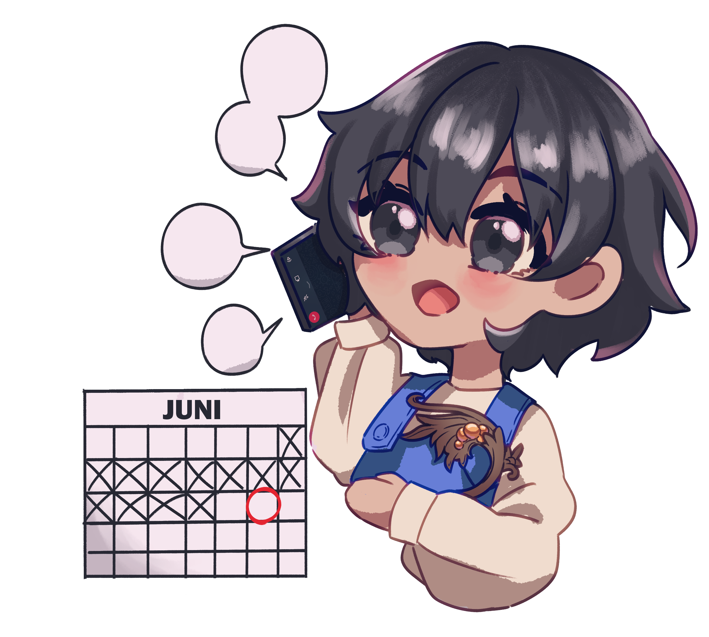

Motif Ukir
Daun Jumbai
 Daun jumbai memiliki bentuk segitiga yang ujungnya lancip dan mempunyai corak yang merelung dan melingkar. Motif ini merepresentasikan hubungan religious antara manusia dengan Tuhan, dan hubungan mutualisme antar sesama manusia. Dalam bentuk daun yang terpecah menjadi tiga, itu membuat tampak seperti sinar. Sinar ini melambangkan cahaya sebagai simbol kehadiran tuhan. Daun jumbai juga merupakan penggambaran tumbuhan vengkeh yang tumbuh subur di Jepara dan memberikan kontribusi yang kuat terhadap perkembangan perekonomian warga.
Daun jumbai memiliki bentuk segitiga yang ujungnya lancip dan mempunyai corak yang merelung dan melingkar. Motif ini merepresentasikan hubungan religious antara manusia dengan Tuhan, dan hubungan mutualisme antar sesama manusia. Dalam bentuk daun yang terpecah menjadi tiga, itu membuat tampak seperti sinar. Sinar ini melambangkan cahaya sebagai simbol kehadiran tuhan. Daun jumbai juga merupakan penggambaran tumbuhan vengkeh yang tumbuh subur di Jepara dan memberikan kontribusi yang kuat terhadap perkembangan perekonomian warga.
Relung/Lung

Unsur relung merupakan alur dari pangkal tumbuhan kepada daun yang memiliki makna sebagai pembuat kesan luwes dan fleksibel pada ukiran.
Burung Merak
 Menggambarkan burung merak yang hinggap/sedang terbang mengembangkan sayapnya yang mengisi sela ukiran, motif ini memiliki makna yang menyesuaikan perilaku hidup sang pengrajin yang suka merantau dan hidup bebas terbang ke daerah lain untuk membangin karir.
Menggambarkan burung merak yang hinggap/sedang terbang mengembangkan sayapnya yang mengisi sela ukiran, motif ini memiliki makna yang menyesuaikan perilaku hidup sang pengrajin yang suka merantau dan hidup bebas terbang ke daerah lain untuk membangin karir.
Sulur Ubi Jalar
 Sulur ubi jalar mengvisualisasikan kesuburan dan melambangkan produk perkarangan yang apabila ditekuni dengan sungguh-sungguh, meskipun dengan modal sedikit, akan menghasilkan produk pangan yang mengcukupi. Juga menggambarkan ketekunan, keuletan, dan kesungguhan para oengrajin dalam mengerjakannya karena dibutuhkan keterampilan yang tinggi.
Sulur ubi jalar mengvisualisasikan kesuburan dan melambangkan produk perkarangan yang apabila ditekuni dengan sungguh-sungguh, meskipun dengan modal sedikit, akan menghasilkan produk pangan yang mengcukupi. Juga menggambarkan ketekunan, keuletan, dan kesungguhan para oengrajin dalam mengerjakannya karena dibutuhkan keterampilan yang tinggi.